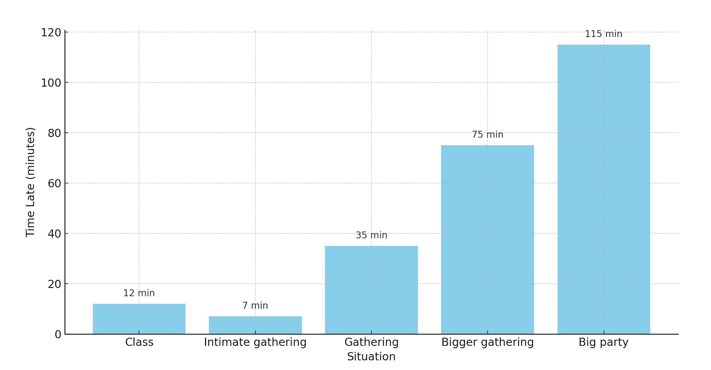

Why Are We Late?
Jan 28, 2024

These are the results of an informal study I conducted this past week. The x-axis represents the situations I was in,
and the y-axis represents the average time people were late before reaching critical mass, after the situation had
begun. For smaller groups, critical mass means full attendance. For larger groups, it means peak attendance. This study
isn't very scientific, but the results are interesting. Note that this is in the context of business school, and these
situations are mostly social and not career-related. My thesis is that the reason people are late falls under one, or a
mix of two categories:
- Group 1 (G1): Typical reasons why one might be late. You might not notice the time, there could be an obstacle, or in
rare instances, you might not respect the time of the other people in the situation.
- Group 2 (G2): Not wanting to appear too eager to attend the event. The later you arrive, the less eager you seem, which
can convey the impression of having other important commitments.
These categories aren’t exactly mutually exclusive. Not respecting the time of other people can be tightly correlated
with wanting to appear important - they both appear to elevate your status. Class is a good example of this. Or, you
might simply forget about an event on their calendar. But how important would something need to be for you to not to
forget it? A topic for another time…
Let's start with intimate gatherings. This can range from one-on-one chats to group dinners with friends. These
situations fall mostly under G1, where appearances have little to do with lateness, and external factors are the primary
cause. You're late because you were preoccupied with another situation, or there was traffic, and you didn't check
Google Maps before leaving the house. These are generally forgivable instances, and often, the stakes are not high. It's
just one or a handful of people on the other end of the situation. The worst is when the person late doesn't respect the
time of the other party. I'd like to think this is the minority, but unfortunately, I don't believe it is.
In the context of class, especially an 8am class, we see a mix of G1 and G2. It's early, and the professor gets it. You
don’t necessarily want to be late, but you had a rough night of sleep. But is that always the case? Perhaps you think
that because this particular professor doesn’t have a “late to class” policy, the stakes are almost zero, leading to a
loss of respect for the situation. Or, maybe you're late because of how you want to be perceived. Being early to class
can seem uncool. We go to class because we have to, not because it's cool. These social dynamics have been etched into
our subconscious for over a decade, and sometimes even two. Old habits die hard.
Gatherings, bigger gatherings, and big parties represent G2 with increasing intensity. It's not surprising that they
also correspond to increasing population sizes. These events are usually in the evening, with fewer obstacles to being
on time. But there's a risk. The more people there are invited, the less reliable they all are in showing up on time.
So, you wait. How long? This varies, but usually, you wait until you think enough people are there, so when you arrive,
you won’t have to be idle. There will be someone you know to talk to. Showing up early and not knowing the few who are
on time can be awkward.
To reiterate, this is a very non-scientific study. My sample size was small and random. The situations were limited to
my own experiences. I didn’t control for any variables and lumped all reasons for lateness into two categories. I didn’t
even accurately time the situations. But I believe the underlying message remains the same - people are late for various
reasons that mostly have to do with external factors and/or a desire to maintain a certain persona.
There are many factors for which I’m grateful I’m no longer active duty. I don't miss being 'Gunny-Timed,' or arriving
15 minutes prior to the 15 minutes prior. I suppose I’m still getting used to this whole no-consequence thing.